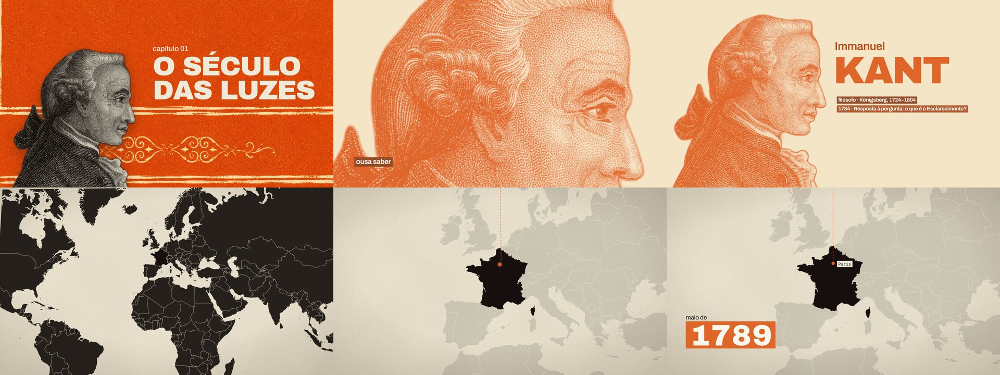
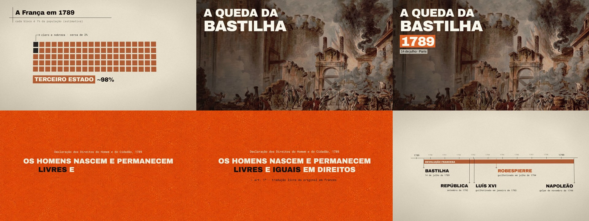
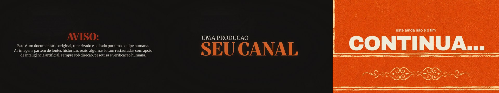

Skill de documentário animado para Claude Code + Remotion
CartazHistórico
Cubra cerca de 80% de um mini-doc com animação editorial sincronizada à fala: colagem em papel creme e laranja, pinturas de época de fontes reais, mapas, linhas do tempo e citações em máquina de escrever.
Ver no GitHubO que fica fixo
- Fonte sempre realPintura, foto ou documento do próprio fato, recriado com fidelidade.
- Sincronia por palavraCada texto entra na palavra falada, com os tempos do Whisper.
- Colagem editorialPapel creme, laranja queimado e preto, com grotesca pesada.
- Texto limpoNunca sobre o rosto, nunca um sobre o outro, sem desfoque.
- Câmera sempre vivaPush-in lento nas imagens e palco 3D nas explicações.
- Camadas no editorProRes 4444 com alfa, cada trecho no seu tempo no Premiere.
O que ela faz



Instale em um comando
git clone https://github.com/ojosuevfx/cartaz-historico-motion.git ~/.claude/skills/cartaz-historico-motion"Anima este mini-doc no estilo cartaz histórico. Cobre uns 80% da timeline e deixa o apresentador nos momentos pessoais."